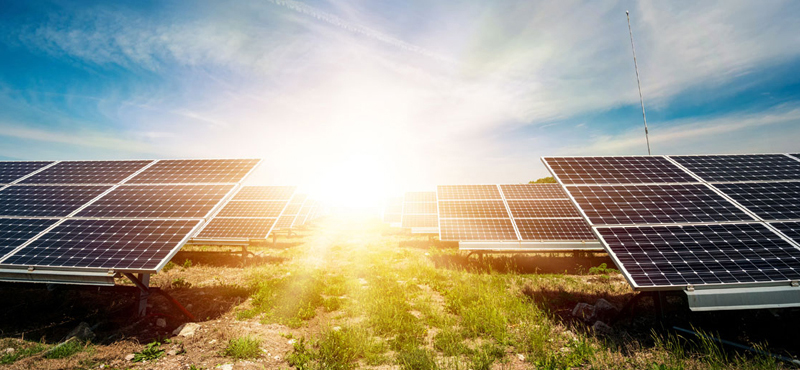

אנרגיה סולארית

ישראל היא מדינה חמה בכל קנה מידה, והחורף השחון הנוכחי מדגים זאת היטב. כאשר מתבוננים על כך שהשמש קופחת מעל ראשינו במרבית ימות השנה, ברור מדוע אחת המגמות בישראל היא מעבר הולך וגובר להתבססות על חשמל סולארי (או אנרגיה סולארית), המופקים באמצעות קרני השמש. איך בדיוק זה מתבצע? מה החיסכון המתאפשר? והאם יש בנמצא מגרעות?
על אנרגיה סולארית
כשמדברים על אנרגיה סולארית, מתכוונים לאנרגיה חלופית ומתחדשת, אשר מקורה, כאמור, בקרינת השמש. באמצעות מתקנים ייעודיים, הקולטים
את אותה אנרגיה, מתבצעת המרה שלה, הן לאנרגיה תרמית והן לחשמל.
כל זאת בהספק גבוה במיוחד,
שמגדיל בעשרות מונים את יעילות השימוש בשיטה זו להפקת אנרגיה. באנרגיה סולארית ניתן להשתמש, בהמשך לכך, באינספור
אופנים. זהו בדיוק הבסיס לפעילותם של דודי השמש, שחייבים להיות בכל בית הנבנה כיום בישראל. שימושים אחרים הן
לאידוי, ייבוש מזון, חימום הבית ועוד.
כך זה מתבצע בפועל
כיום, ידועות שתי דרכים עיקריות כדי להביא לניצולה של אנרגיה סולארית. השיטה הראשונה עונה לשם אנרגיה תרמו-סולארית. כאן ייעשה
חימומו של הנוזל, מה שיפעיל מנוע חום, שיביא לייצור חשמל או לעבודה מכנית מסוג מסוים. זהו בדיוק העיקרון העומד
בבסיסם של דודי השמש, או לחילופין תחנות הכוח התרמו-סולאריות: בהן, קיטור הנוצר באמצעות החום מניע טורבינה, שמפיקה
את החשמל.
השיטה המקובלת השניה כיום היא באמצעות אנרגיה פוטו-וולטאית (או פוטו-חשמלית).
בשיטה זו, תאים פוטו-וולטאים, אשר עשויים לרוב מסיליקון, מבצעים המרה של אור לאנרגיה חשמלית, בצורה ישירה. המערכת
כוללת סרט בעל מוליכות חלקית, הממוקם בין שתי אלקטרודות. החשיפה לאור מנתקת את האלקטרונים, מה שיוצר תנועה חשמלית
לכל דבר ועניין.
יש לציין כי רמת הנצילות של שיטה זו נחשבת לנמוכה יותר מאשר זו הקודמת, ושהעלויות שלה, נכון
להיום, גבוהות פי כמה. היתרונות המרכזיים של אנרגיה סולארית הגם שההתבססות על אנרגיה סולארית
היתרונות המרכזיים של אנרגיה סולארית
הגם שההתבססות על אנרגיה סולארית בישראל עדיין בחיתוליה (למעט דודי השמש), ניתן להבחין במגמת עליה, שסביר שתימשך
בשנים הקרובות. יש לכך לא מעט סיבות, אשר דומה שבראשן זו הכלכלית: בטווח הארוך, תאפשר האנרגיה הסולארית צמצום
מאסיבי של צריכת החשמל, מה שעשוי להביא להוזלה של עשרות אחוזים בהוצאות המשפחה הממוצעת.
בהמשך לכך, המעבר
לאנרגיה סולארית מאפשר עצמאות, במנותק מכל אותם משאבים מתכלים, המצטמצמים מהעולם בקצב מדאיג (דלק, למשל). גם
הטיעון האקולוגי נכנס כאן לתמונה, שעה שמדובר באחת השיטות הידידותיות ביותר לסביבה שקיימות. יש לציין כי באנרגיה
או בחשמל סולאריים בהחלט ניתן להשתמש גם בצורה של אגירה, מה שיאפשר שימוש עתידי, בעת הצורך. הדבר מתאפשר עקב
כך שאנרגיית השמש אינה מתכלה, להבדיל מפתרונות אנרגיה מסורתיים יותר, בראשם הדלק.
ומה באשר לחסרונות?
יחד עם הנאמר מעלה, חשוב להזכיר שהליך המעבר להתבססות על אנרגיה סולארית אינו פשוט כלל, ולעיתים אף אינו אפשרי. על
מנת להקים את מערכות הקליטה וההמרה שהוזכרו נדרשות לא מעט הוצאות, מה שמביא להשקעה ראשונית גבוהה בכל קנה מידה.
נכון, ברוב המקרים ההשקעה תחזיר את עצמה תוך כמה שנים, אך לא תמיד יש את ההון הראשוני הנדרש להקמת המערכת.
כאשר מתבססים אך ורק על אנרגיה מהסוג הזה, עלולים להיתקל בבעיה: נכון, בישראל מרבית ימות השנה כוללים שמש, אבל
לא כולם. גם בלילות, מטבע הדברים, האנרגיה לא תיתן את אותותיה. תחנות ללא אגירה, או לחילופין כאלה שאינן כוללות
מקור נוסף לאנרגיה, עלולות להיתקל בבעיה לא פשוטה.